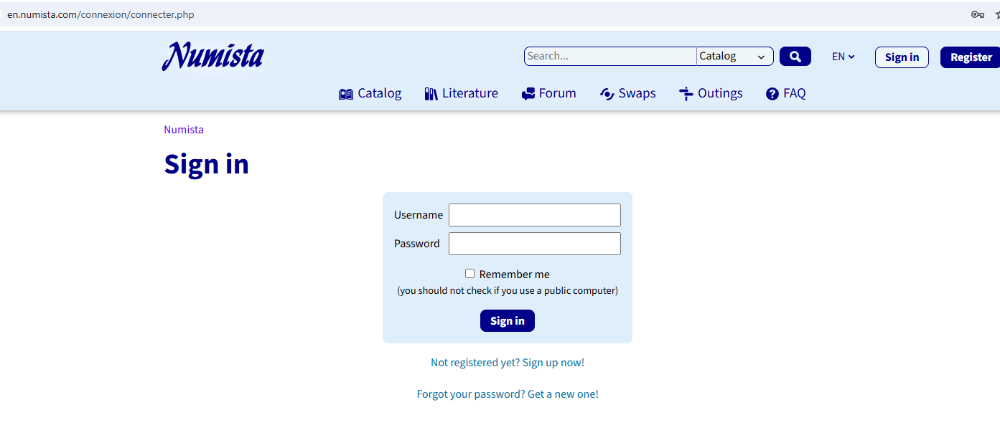
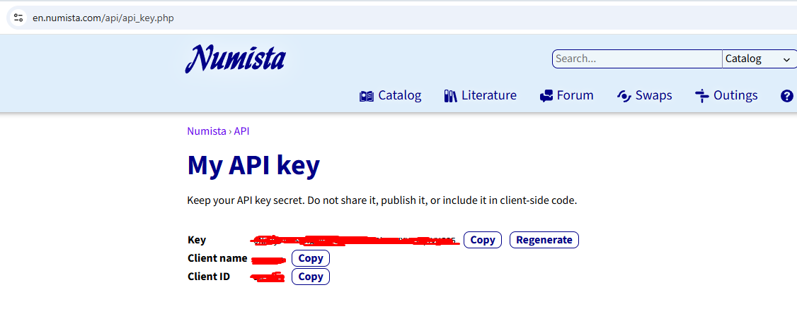

Numista: реєстрація та ключ API
Numista безкоштовна. Програма працює з Numista через офіційний API Numista: кожен користувач має власний безкоштовний ключ (2000 запитів на місяць — досить для колекції з кількох сотень монет). Реєстрація займає близько 5 хвилин.
1. Зареєструйтеся на Numista
- Відкрийте en.numista.com і натисніть Sign up (сайт можна перемкнути на іншу мову внизу сторінки).
- Введіть ім'я користувача, e-mail і пароль.
- Підтвердіть e-mail: відкрийте лист від Numista й перейдіть за посиланням.

Скриншот: images/12-numista-signup.png
2. Отримайте ключ API
- Увійшовши на Numista, відкрийте en.numista.com/api/api_key.php.
- Заповніть коротку форму (англійською). В описі використання можна написати: personal management of my coin collection with the Coins Collection program.
- Скопіюйте ключ, який видасть Numista. Нікому його не показуйте — як пароль.

Скриншот: images/13-numista-api-key.png
3. Введіть ключ у програмі
- Numista → Connect / Settings/Numista → Підключення / налаштування, вставте ключ.
- Натисніть Check connection/Перевірити підключення: програма перевірить ключ і завантажить списки емітентів і каталогів Numista (один раз).

Скриншот: images/05-numista-settings.png
Готово. Далі: З чого почати — імпортуйте свою колекцію Numista або пов'яжіть монети з uCoin. Про запити й місячну квоту: Numista: підключення та запити.